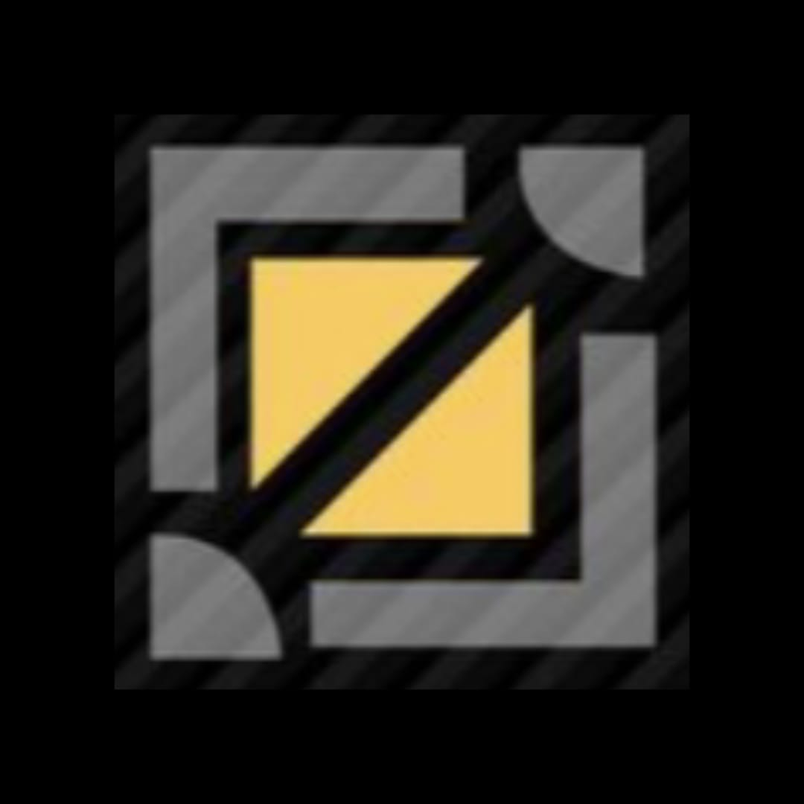
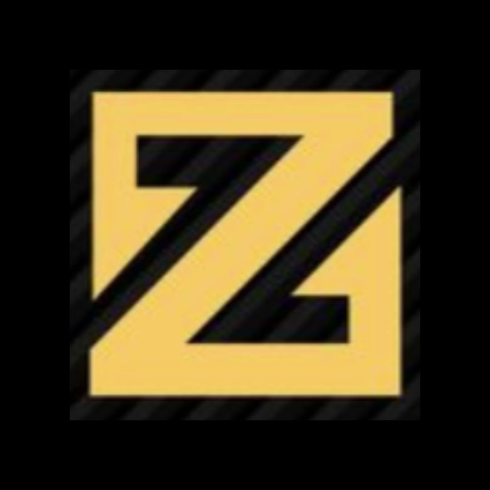

Tipe role hero mlbb

Jungler
Jungler merupakan role penting yang ada di Mobile Legends dan mempunyai peran yang penting Selengkapnya

Roamer
Roamer adalah peran di Mobile Legends yang bertanggung jawab atas menjaga keseimbangan tim dan membantu rekan setim dalam berbagai aspek permainan Selengkapnya

Mid-laner
Sesuai dengan namanya, pemain yang mengambil role Mid Laner akan berada di lane tengah sepanjang permainan Selengkapnya

Exp-laner
Role Exp Laner pada dasarnya merupakan versi terbaru dari Offlaner, dimana kalian bermain di solo lane untuk berhadapan dengan lawan. Selengkapnya

Gold-laner
Sebagai gold laner, tugas PALING PENTING kalian adalah mengamankan gold sebanyak-banyaknya Selengkapnya